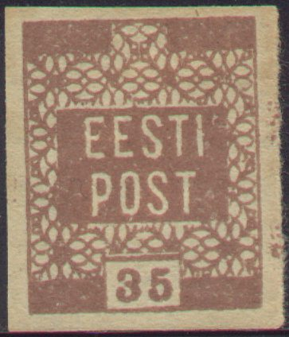
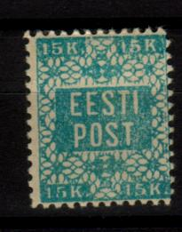
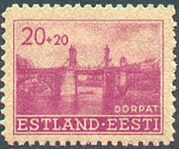

{kind=link}

Estland - Estonie
Note: on my website many of the
pictures can not be seen! They are of course present in the
catalogue;
contact me if you want to purchase it.
5 k red 15 k blue 35 k brown 70 k green
Value of the stamps |
|||
vc = very common c = common * = not so common ** = uncommon |
*** = very uncommon R = rare RR = very rare RRR = extremely rare |
||
| Value | Unused | Used | Remarks |
| 5 k | c | c | |
| 15 k | * | * | |
| 35 k | * | * | |
| 70 k | ** | ** | |

Normally, these stamps are imperforated, but large amount of perforated stamps ended up in collectors hands.
I have seen forgeries of the 35 k value made by Jaan Lubi in 1930. I have no further information on the distinghuishing characteristics of these forgeries.
Website: http://www.efur.se/catalogue/cat1.html.


5 p orange (design as 10 p) 5 p yellow (seagull) 10 p green (value) 15 p red (sun) 35 p blue (seagulls) 70 p violet (seagulls) 1 M blue and black (viking ship) 5 M yellow and black (viking ship) 15 M green and violet (viking ship) 25 M blue and brown (viking ship) Surcharged (1920)
'1 Mk.' on 15 p red '2 Mk.' and bars on 70 p violet
Value of the stamps |
|||
vc = very common c = common * = not so common ** = uncommon |
*** = very uncommon R = rare RR = very rare RRR = extremely rare |
||
| Value | Unused | Used | Remarks |
| 5 p orange | vc | vc | |
| 5 p yellow | ** | ** | |
| 10 p | vc | vc | Imperforate or perforated 11 1/2. |
| 15 p | c | c | |
| 35 p | c | vc | |
| 70 p | c | c | |
| 1 M | c | c | |
| 5 M | * | c | |
| 15 M | ** | ** | Imperforate or perforated 14 x 13 1/2. |
| 25 M | *** | ** | Imperforate or perforated 14 x 13 1/2. |
| 1 M on 15 p | c | c | |
| 2 M on 70 p | * | * | |
Some stamps exist with local postmaster perforation (see the 5 p above for example). I have seen stamps of the 1919 issue of Estonia overprinted with 'BALTISKI' in various colours and styles. I have no further information on these stamps.
I have seen forgeries of the 70 p value made by Jaan Lubi in 1930. I have no further information on the distinghuishing characteristics of these forgeries. A 1 m yellow and black 'misprint' was produced illegally.

25 p green 25 p yellow 35 p red 50 p green 1 M red 2 M blue 2.50 M blue Surcharged (1920)
'1 Mk.' on 35 p red
Value of the stamps |
|||
vc = very common c = common * = not so common ** = uncommon |
*** = very uncommon R = rare RR = very rare RRR = extremely rare |
||
| Value | Unused | Used | Remarks |
| 25 p green | c | vc | |
| 25 p yellow | vc | vc | |
| 35 p | c | c | |
| 50 p | * | c | |
| 1 M | * | c | |
| 2 M | * | c | |
| 2.50 M | * | c | |
| 1 M on 35 p | c | c | |
Some stamps exist with local postmaster perforation (see the 35 p above for example).
5 M black, yellow and grey
To be used on airmail from Reval to Helsingfors.
Value of the stamps |
|||
vc = very common c = common * = not so common ** = uncommon |
*** = very uncommon R = rare RR = very rare RRR = extremely rare |
||
| Value | Unused | Used | Remarks |
| 5 M | * | * | |
With red '1923' overprint '1923' on 5 M black, yellow and grey With red '1923' overprint and surcharged
'10 Marka' (red, overprint on two stamps) on 5 M black, yellow and grey '15 Marka' (red, overprint slanting) on 5 M black, yellow and grey '20 Marka' (red, overprint on two stamps) on 5 M black, yellow and grey '45 Marka' (red, overprint on two stamps) on 5 M black, yellow and grey
35 + 10 p red and olive 70 + 15 p blue and brown Surcharged '1 Mk.' on 35 + 10 p red and olive '2 Mk.' on 70 + 15 p blue and brown
Value of the stamps |
|||
vc = very common c = common * = not so common ** = uncommon |
*** = very uncommon R = rare RR = very rare RRR = extremely rare |
||
| Value | Unused | Used | Remarks |
| 35 + 10 p | c | c | |
| 70 + 15 p | * | c | |
| 1 Mk on 35 + 10 p | * | * | |
| 2 Mk on 70 + 15 p | * | c | |
3 1/2 M (2 1/2 M) orange, grey and red 7 M (5 M) blue, grey and red Overprinted 'Aita hadalist.' vertically 3 1/2 M (2 1/2 M) orange, grey and red 7 M (5 M) blue, grey and red Surcharged (1926) '5 5 6 6' on 3 1/2 M orange, grey and red (perforated) '10 10 12 12' on 7 M blue, grey and red
Weaver
1/2 M orange (perforated or imperforate) 1 M brown (perforated or imperforate) 2 M green (perforated or imperforate) 2 1/2 M lilac (perforated or imperforate) 3 M green (perforated) Blacksmith
5 M red (perforated or imperforate) 9 M red (perforated or imperforate) 10 M blue (perforated or imperforate) 10 M grey (perforated, issued for a stamp exhibition) 12 M red (perforated) 15 M lilac (perforated) 20 M blue (perforated) Overprinted '1918 24/11 1928 S.S.' value overprinted in 's' (1928)
2 s green (red overprint) 5 s red 10 s blue (red overprint) 15 s lilac (red overprint) 20 s blue (red overprint)
100 M olive and blue 300 M brown and blue Surcharged (1930) '2 KROONI 2' on 300 M brown and blue '3 KROONI 3' on 300 M brown and blue
(Airmail stamp of 1924)
5 M yellow and black 10 M blue and black 15 M red and black 20 M green and black 45 M violet and black
30 M lilac and black ('KOLKUMMEND MARKA', theater in Dorpat)
40 M blue and black ('NELIKUMMEND MARKA', theater of Estonia)
70 M red and black ('SEITSEKUMMEND MARKA', theater of Estonia)
Surcharged (1930)
'1 KROON' on 70 M red and black
5 M + 5 M green and brown on grey ('KURESAALE')
10 M + 10 M blue and grey on yellow ('TARTU')
12 M + 12 M red and black on grey
Larger size
20 M + 20 M blue and lilac on grey ('NARVA')
40 M + 40 M brown and blue on brown ('TALLINN')
These stamps have a numbering in the design.
(1928 issue, three lions)
1 s grey (blue network underprint) 2 s green (red network underprint) 4 s dark green (brown network underprint) 5 s red (green network underprint) 8 s lilac (red network underprint) 10 s blue (lilac network underprint) 12 s red (green network underprint) 15 s yellow (grey network underprint) 15 s red (blue network underprint, 1935) 20 s blue (red network underprint) 25 s violet (blue network underprint) 25 s blue (brown network underprint) 40 s orange (grey network underprint) 60 s grey (brown network underprint) 80 s brown (blue network underprint)
2 s + 3 s green and red (red cross with knight) 5 s + 3 s red (lighthouse) 10 s + 3 s blue and red (design as 5 s) 20 s + 3 s blue and red (design as 2 s)
5 s red (with yellow network underprint) 10 s blue (with lilac network underprint) 12 s red (with blue network underprint, design as 5 s) 20 s blue (with olive network underprint, design as 10 s)
1 K black
2 s green (with red network underprint) 5 s red (with green network underprint) 10 s blue (with lilac network underprint)
5 s + 3 s red (with green network underprint) 10 s + 3 s blue and red (with lilac network underprint) 12 s + 3 s red and orange (with green network underprint) 20 s + 3 s blue and red (with orange network underprint)
3 K brown
10 s + 10 s green and blue (with grey network underprint) 15 s + 15 s red and blue (with grey network underprint) 25 s + 25 s blue and red (with brown network underprint) 50 s + 50 s black and brown (with olive network underprint)
1 s brown 2 s light green 3 s orange (1940) 4 s lilac 5 s green 6 s red 6 s green (1940) 10 s blue 15 s red 15 s blue (1939) 18 s red-brown 20 s lilac 25 s blue 30 s yellow 30 s blue 50 s brown 60 s lilac
5 s green (with yellow network underprint) 10 s blue (with lilac network underprint) 15 s red (with orange network underprint) 25 s blue (with brown network underprint)
10 s + 10 s green (with grey network underprint) 15 s + 15 s red (with grey network underprint) 25 s + 25 s blue (with lilac network underprint) 50 s + 50 s lilac (with grey network underprint)
5 s green 10 s brown 15 s red (design as 10 s) 25 s blue (design as 5 s)
I've seen these stamps printed in a minisheet (one stamp of each value), with inscription '100 [OPETATUD EESTI SELTS]' on top.
10 s + 10 s brown 15 s + 15 s red and green 25 s + 25 s blue and red 50 s + 50 s black and yellow
I've seen these stamps printed in a minisheet (one stamp of each value), with inscription 'UHISABI CARITAS 1938.A.' on top.
2 K blue
10 s + 10 s green 15 s + 15 s red 25 s + 25 s blue 50 s + 50 s brown
I've seen these stamps printed in a minisheet (one stamp of each value), with inscription 'UHISABI CARITAS 1939.A.' on top and 'LISAMAKS VANADE INTELLIGENTIDE KODU HEAKS' at the bottom.
5 s green 10 s violet 18 s red 30 s blue
I've seen these stamps printed in a minisheet (one stamp of each value), with the arms of the city next to the 5 s stamp and 'KUURORT PARNU 1839 1939' next to the 30 s stamp.
10 s + 10 s green and blue 15 s + 15 s red and blue 25 s + 25 s blue and red 50 s + 50 s light brown and blue
3 s orange 10 s violet 15 s red 30 s blue

15 + 15 brown (Reval, tower) 20 + 20 lilac (Dorpat bridge) 30 + 30 blue (Narva, city view) 50 + 50 light blue (Reval, city view) 60 + 50 red (Dorpat, theater) 100 + 100 grey (Narva, castle)

15 brown 20 green 30 blue
20 + 20 black and blue 30 + 30 black and blue
5 k red 10 k blue 15 k green 20 k green 30 k blue

'Eesti Post' on 10 k blue stamp of the Sowjet Union (expertized)
Other stamps of the Sowjet Union exists with overprint 'Eesti Post'. I've seen 1 k orange, 5 k red, 10 k blue and 20 k green.
Some Hitler stamps of Germany with overprint 'OSTLAND' were used in Estonia later during World War II.
Stamps with inscription is 'Eesti Post Virumaa' are bogus issues, pretending to be an issue made by the Sowjet Union.
(Reduced sizes)
I've seen the values (designs all slightly different): 5 k orange, 35 k red, 50 k blue, 1 R black, 3 R violet and 10 R lilac.
Stamps of Russia, overprinted 'Eesti Post' in violet or black, example:

The origin of these stamps is 'dubious'. The values 1 k orange, 2 k green, 3 k red, 5 k lilac, 10 k blue, 10 k on 7 k blue, 15 k brown and blue, 25 k green and violet, 35 k brown and green, 50 k violet and green, 1 R brown and orange and 10 R red, yellow and grey exist perforated. The values 1 k orange, 2 k green, 3 k red, . The values 1 k orange, 2 k green, 3 k red, 1 R brown and orange, 3 1/2 R brown and green and 5 R blue and green exist imperforated. These overprints are rare to extremely rare. Forged overprints exist.
Another overprint 'Eesti (RakWere)' and value on Russian postal stationary cuts should exist in 1919 (very rare): 10 k on 2 k green, 15 on 2 k green, 20 on 2 k green and 35 on 1 k orange. Many forgeries exist. http://www.efur.se/catalogue/local1.html
I have seen many fiscal stamps 'EESTI TEMPELMARK' in many different designs, example:
Revenue stamp of 1897 50 k blue (exists with inverted 'N' just
above the '5'). It was also issued in 50 k red.
{kind=link}